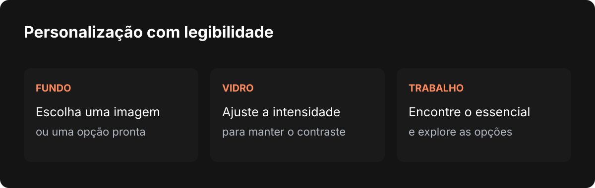

Nardoto
NardotoPor que estou mudando o visual do Studio
O novo tema Liquid Glass nasce de uma preocupação antiga: deixar o Nardoto Studio mais agradável, pessoal e simples de usar durante o trabalho diário.

Eu sempre me preocupei com a aparência do Nardoto Studio. Não só com a parte de deixar o aplicativo bonito, mas com a sensação de quem abre o programa e precisa entender por onde começar.
Esse é um dos desafios mais difíceis de criar uma ferramenta. Eu sei o que cada botão faz porque acompanhei a construção de cada parte. Quem chega pela primeira vez não participou desse processo. Se eu colocar tudo na tela ao mesmo tempo, uma ferramenta feita para ajudar pode começar assustando.
Nos últimos dias, tenho dedicado bastante tempo a um novo tema para o Studio. Ele se chama Liquid Glass e é uma tentativa de trazer mais leveza para um aplicativo que cresceu muito, sem deixar de lado os recursos que fazem parte do trabalho de quem já usa o programa.
Uma ferramenta que eu também quero usar
Grande parte do Studio nasceu de necessidades minhas. Eu queria facilitar meu trabalho, reunir ferramentas e conseguir produzir sem passar o dia pulando de uma janela para outra. Depois, fui compartilhando esse caminho com outras pessoas que também precisam criar.
Com a personalização, aconteceu algo parecido. Eu gosto de mudar o ambiente em que trabalho: trocar imagens, experimentar temas e deixar a tela com uma aparência que combine com o momento. Como passo muito tempo no aplicativo, achei que isso também deveria fazer parte da experiência.
O novo tema permite escolher fundos e usar imagens próprias. Existe também a opção de manter uma coleção e alternar as imagens. Quero que a pessoa possa abrir o Studio e encontrar um espaço que pareça dela, sem precisar abrir mão de enxergar o que está fazendo.
A inspiração no Liquid Glass da Apple
A inspiração visual veio do Liquid Glass apresentado pela Apple, com suas superfícies que lembram vidro e deixam o conteúdo ao fundo participar da interface. Estou trazendo essa ideia para o Studio e adaptando o visual ao que um programa de produção precisa.
O objetivo é deixar a interface mais limpa, dar profundidade às janelas e criar uma aparência mais refinada. Mas o efeito só funciona para mim se a pessoa conseguir continuar trabalhando com conforto. Uma superfície bonita que dificulta a leitura não resolve o problema.
Por isso, há um cuidado com a intensidade do vidro e com o contraste entre o fundo, os textos e os controles. O tema também oferece fundos preparados para esse ambiente. Uma foto pessoal pode ficar bonita, mas imagens com muitos detalhes ou cores muito contrastantes podem disputar atenção com o trabalho. A escolha do fundo e o ajuste da transparência ajudam a encontrar um equilíbrio.

O desafio de mostrar o que importa
Um aplicativo de produção reúne muitas possibilidades. Com o tempo, é fácil adicionar uma opção aqui, outro botão ali e uma janela nova para resolver mais um problema. Cada decisão pode fazer sentido sozinha. Quando todas aparecem juntas, porém, a tela fica difícil de percorrer.
Estou tentando olhar para o Studio também pelos olhos de quem nunca o viu. O que precisa aparecer primeiro? O que a pessoa procura durante o trabalho? O que pode ficar acessível em um segundo momento, para quem quiser se aprofundar?
Simplificar não significa tirar tudo. Significa organizar melhor a experiência. Quem está começando precisa encontrar o essencial; quem quer explorar mais deve continuar conseguindo descobrir as funções. Esse equilíbrio exige observar o uso, testar e corrigir, porque a ideia que parece clara para quem construiu nem sempre é clara para quem acabou de chegar.
Design também é parte da ferramenta
Eu gosto de estudar o trabalho do Steve Jobs e sempre lembro da história que ele contou sobre as aulas de caligrafia. Anos depois, aquele interesse ajudou a influenciar a atenção dada à tipografia do Macintosh. Ele falou sobre isso em seu discurso em Stanford.
Essa história me lembra que detalhes visuais não precisam ser tratados como enfeite colocado no final. Letras, espaçamento, contraste e organização fazem parte da maneira como uma pessoa entende e usa uma ferramenta.
No Studio, quero que essa atenção apareça no cotidiano: ao abrir um projeto, procurar uma função ou passar horas trabalhando em um vídeo. A interface deve ajudar a pessoa a se concentrar no que veio fazer.
Um novo caminho, com espaço para escolher
Estou mantendo os temas antigos para quem gosta deles. Ao mesmo tempo, minha intenção é levar o Studio cada vez mais nessa direção visual: um ambiente mais leve, personalizável e agradável para o uso diário.
O Liquid Glass ainda está sendo desenvolvido e refinado. Vou continuar observando legibilidade, desempenho e comportamento em diferentes telas e fundos. A ideia é construir um visual que a pessoa goste de abrir todos os dias e que ajude o trabalho a acontecer com mais clareza.
Escrito por Tharcisio Nardoto, engenheiro civil e criador do Nardoto Studio.